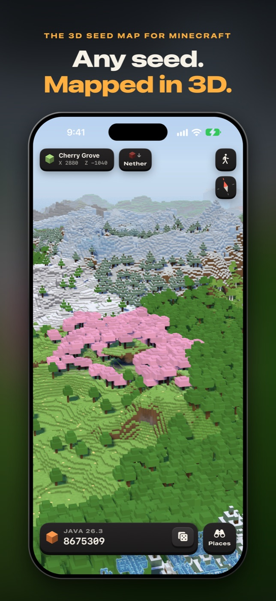
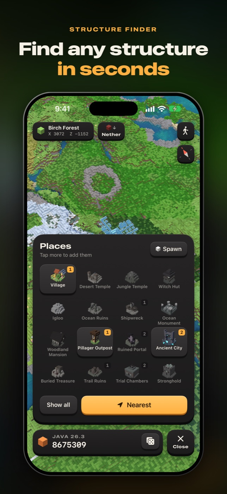
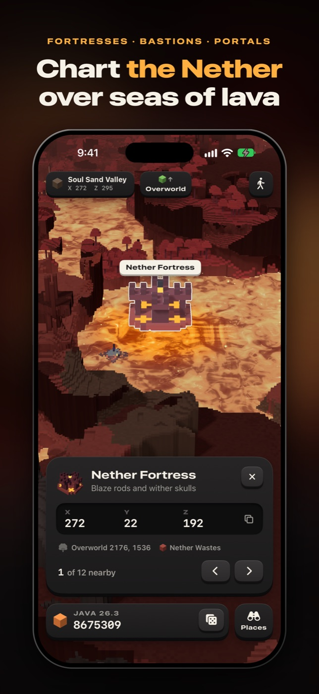
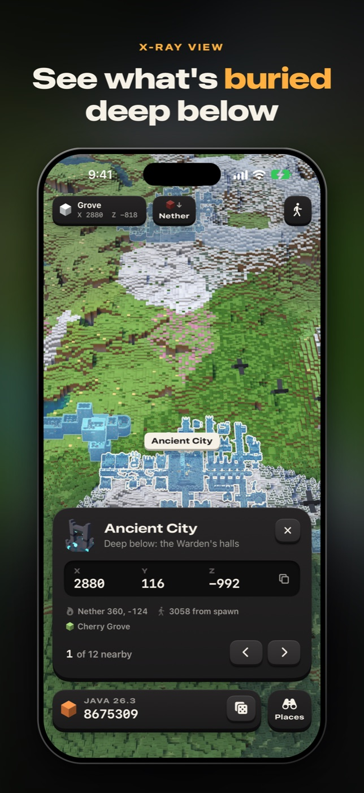
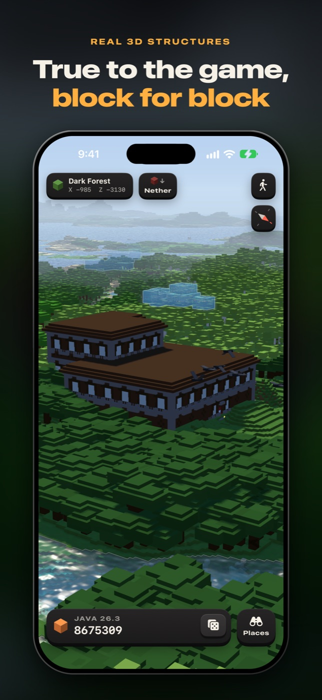
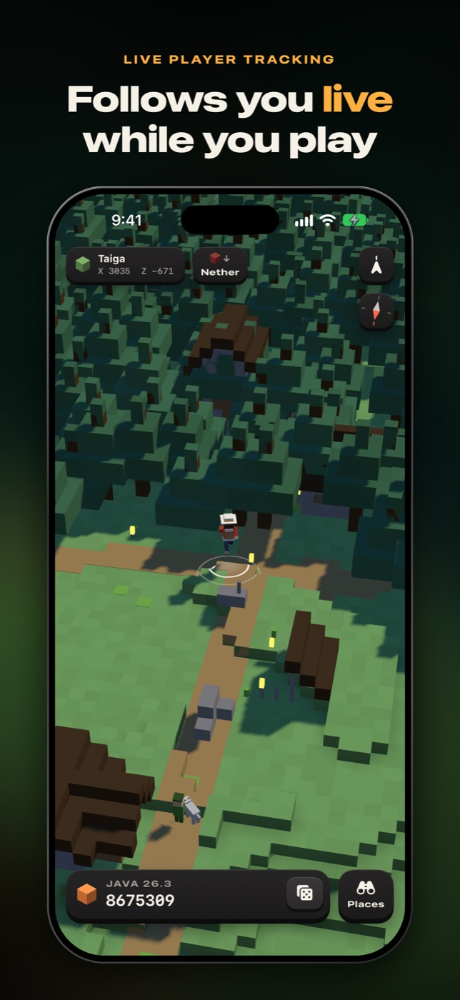

The 3D seed map for Minecraft
Any seed. Mapped in 3D.
Type a seed and its whole world rises in front of you. Fly over continents, drop down to single blocks, and find every village, stronghold and ancient city before you set foot in it.
Coming to the App StoreiPhone and iPad · Java and Bedrock · every version from 1.18 to today






Find any structure
Villages, temples, mansions, monuments, strongholds, ancient cities, trial chambers and more. One tap flies you to the nearest.
Built like the game builds them
Real 3D models, block for block and at true size. What lies buried shows through the ground as an x-ray.
The Nether, too
Lava seas, fortresses and bastions. One tap dives straight down to the spot a portal would lead to.
Follows you live
Connect your game and the map rides with you like a navigation system. See how to set it up.